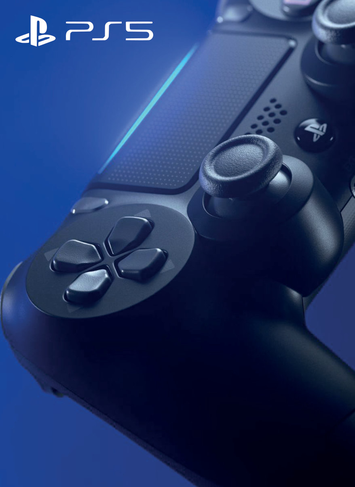
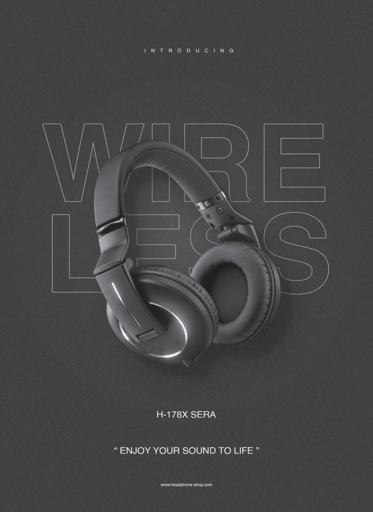

İç sayfa
Tam sayfa reklamlar
Derginin iç sayfaları için iki ürün reklamı: mavi ışıkla dramatize edilmiş bir PS5 kontrolcüsü ve “Wireless” tipografisinin arkasından çıkan minimal bir kulaklık kompozisyonu.
- PS5 kontrolcü reklamı
- H‑178X kulaklık reklamı

